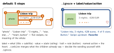

swiftui · folio
In one line: SwiftUI derives an accessibility tree from the view tree: every Text, Image and
control becomes an element, stacks are transparent. Your job is to shape that tree — one stop per
idea (group, label, value, actions) — and let text grow (Dynamic Type) while the layout reflows
and motion respects user settings.
Download PDF Print view LaTeX source

The tree
accessibilityElement(children:)— default.ignore: new element, children hidden, you label it..combine: children merged into one (“not all traits are merged; a default action may become a named action”)..contain: children kept, grouped (scope for order and rotors).- Describe:
accessibilityLabel,Value(changing state),Hint,accessibilityAddTraits(.isButton / .isHeader / .isSelected),accessibilityInputLabels(Voice Control names),accessibilityIdentifier(tests). Decorative:Image(decorative:)or.accessibilityHidden(true). - Actions:
.accessibilityAction(named: "Favorite") { }= the Actions rotor (swipe up/down) — the VoiceOver way to reach swipe / long-press features. Kinds:.magicTap(two-finger double tap: play/pause, answer),.escape(Z-scrub: close);accessibilityAdjustableActionfor increment/decrement. - Custom controls:
accessibilityRepresentation { Slider(…) }(15) — SwiftUI hides the stand-in and takes its elements, traits and actions. A customToggleStylekeepsToggle’s semantics for free. - Navigation:
accessibilityRotor("Unread") { … AccessibilityRotorEntry }— jump lists;accessibilitySortPriority(n)— higher first, default 0;@AccessibilityFocusStatemoves focus (to an error).accessibilityCustomContent: secondary facts on demand;accessibilityChildren { }: synthetic elements for aCanvas.
Dynamic Type & settings
- 12 sizes:
xSmall…large(default) …xxxLarge+accessibility1–5;isAccessibilitySize. 11 text styles (largeTitle…caption2);.bodyis 17 pt atlarge. Custom font:.custom("Inter", size: 17, relativeTo: .body). @ScaledMetric(relativeTo: .body) var s = 24(14) scales numbers: icon size, padding, spacing.- Clamp with
.dynamicTypeSize(...DynamicTypeSize.xxxLarge)(15) only for chrome that cannot grow — and add.accessibilityShowsLargeContentViewer(). - Reflow:
ViewThatFits { HStack; VStack }(16) orisAccessibilitySize ? AnyLayout(VStackLayout()) : AnyLayout(HStackLayout())(keeps identity); no fixed heights, let text wrap, allow scrolling. - Settings (environment):
accessibilityReduceMotion(fade instead of move),accessibilityReduceTransparency,colorSchemeContrast,accessibilityDifferentiateWithoutColor,legibilityWeight,accessibilityVoiceOverEnabled.
Test it
| Accessibility Inspector | inspect elements, run an audit, flip settings live |
| Xcode previews | Dynamic Type / colour-scheme variants side by side |
performAccessibilityAudit() | XCUITest, iOS 17; 9 types incl. contrast,
dynamicType, textClipped, hitRegion; handler true = ignore |
voiceOverService | iOS 27 XCUITest: moveForward(), currentSpeech() |
| real VoiceOver | triple-click shortcut; listen to order and wording |
What VoiceOver visits

Example — one card, one stop
struct TripCard: View {
let trip: Trip; @Binding var fav: Bool
@ScaledMetric(relativeTo: .body) private var thumb = 56
@Environment(\.dynamicTypeSize) private var size
var body: some View {
let layout = size.isAccessibilitySize // reflow, keep identity
? AnyLayout(VStackLayout()) : AnyLayout(HStackLayout())
layout {
Photo(trip).frame(width: thumb, height: thumb)
Details(trip); FavButton(isOn: $fav) } // stars, heart
.accessibilityElement(children: .ignore) // one stop
.accessibilityLabel("\(trip.title), \(trip.subtitle)")
.accessibilityValue("\(trip.rating) of 5 stars")
.accessibilityAddTraits(.isButton)
.accessibilityAction(named: fav ? "Unfavorite" : "Favorite") {
fav.toggle() }
} }
// UI test: try XCUIApplication().performAccessibilityAudit()Traps
.accessibilityElement()with no argument =.ignore: children vanish — an unlabelled, silent element..onTapGesturecard: no.isButtontrait — VoiceOver users can’t tell it acts..frame(height: 44)/lineLimit(1)on text — clipped at AX sizes (textClipped).- Clamping Dynamic Type app-wide to dodge layout work; state shown only by colour or motion.
- A green audit ≠ accessible: it can’t judge order, wording or task flow — listen with VoiceOver.